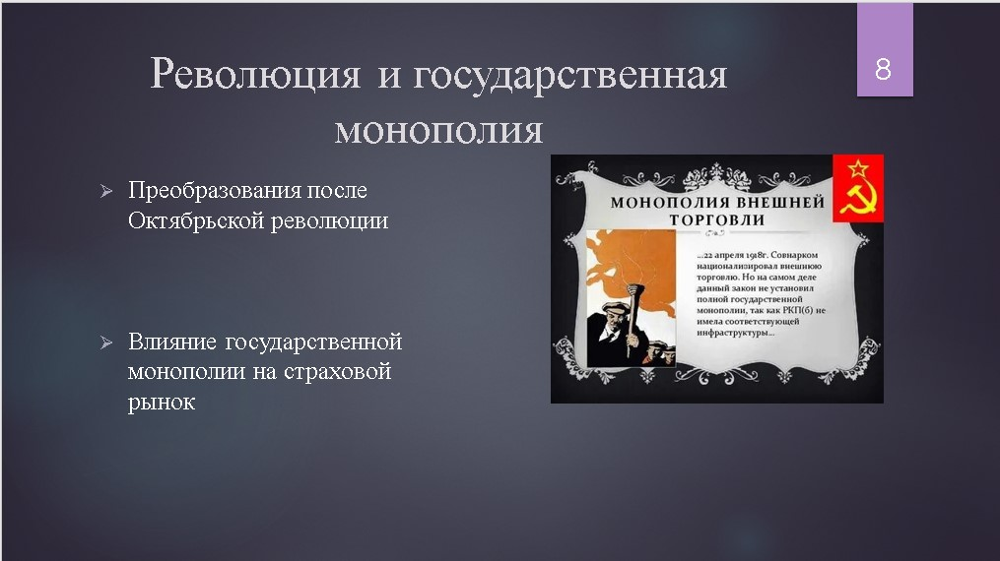
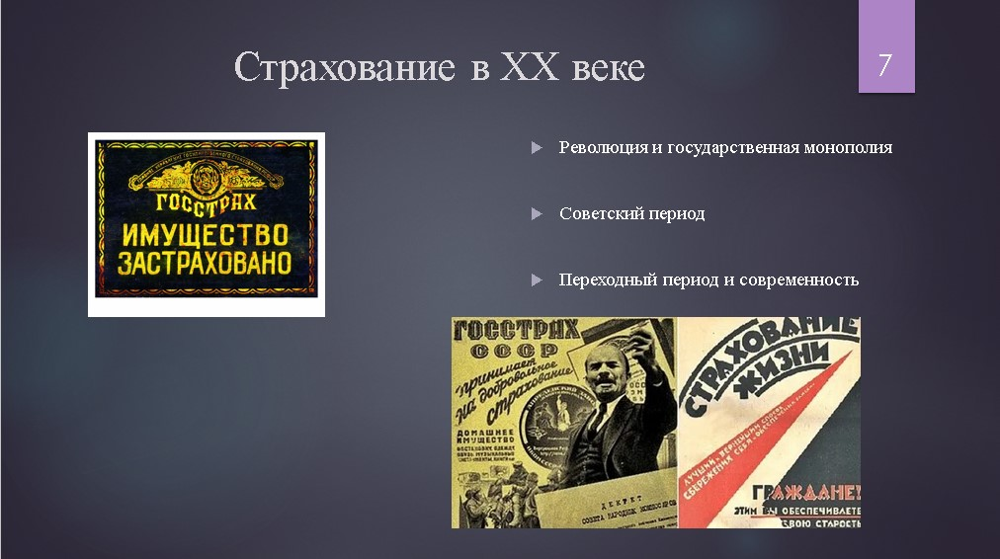

Глава 2. Страхование в XX веке
2.1 Революция и государственная монополия
XX век стал периодом значительных изменений в страховой системе России. После Октябрьской революции 1917 года произошли радикальные преобразования, которые оказали глубокое влияние на страховой рынок.
Преобразования после Октябрьской революции
- Национализация страховых компаний: После Октябрьской революции все страховые компании были национализированы. Это означало, что страхование стало государственной монополией, и все страховые операции находились под контролем государства.
- Создание Госстраха: В 1921 году был создан Госстрах, который стал основным страховым учреждением в Советском Союзе. Госстрах занимался всеми видами страхования, включая страхование имущества, транспорта и жизни.
Влияние государственной монополии на страховой рынок
- Централизация страховых услуг: Государственная монополия привела к централизации страховых услуг. Все страховые операции были сосредоточены в руках государства, что позволило более эффективно управлять рисками и распределять ресурсы.
- Унификация страховых продуктов: В условиях монополии страховые продукты были унифицированы, что упростило процесс страхования и сделало его более доступным для широкой аудитории.
- Ограничение частного страхования: В период государственной монополии частное страхование было практически невозможно. Это ограничивало конкуренцию и инновации на страховом рынке.

2.2 Советский период
Советский период в истории страхования в России характеризуется развитием государственного страхования и его интеграцией в экономическую систему страны.
Развитие государственного страхования в СССР
- Создание Госстраха: В 1921 году был создан Госстрах, который стал основным страховым учреждением в Советском Союзе. Госстрах занимался всеми видами страхования, включая страхование имущества, транспорта и жизни.
- Государственное управление страхованием: Все страховые операции находились под контролем государства. Это позволило более эффективно управлять рисками и распределять ресурсы в соответствии с государственными приоритетами.
Роль государственного страхования в экономике
- Финансовая поддержка государства: Госстрах предоставлял финансовую поддержку государству, страхуя государственные объекты и инфраструктуру. Это помогало минимизировать финансовые потери от стихийных бедствий и других рисков.
- Социальная защита населения: Госстрах также обеспечивал социальную защиту населения, предоставляя страховые услуги для граждан. Это включало в себя страхование жизни и здоровья, что было важно для поддержания социальной стабильности.
- Унификация страховых продуктов: В условиях государственной монополии страховые продукты были унифицированы, что упростило процесс страхования и сделало его более доступным для широкой аудитории.

2.3 Переходный период и современность
Переходный период в конце XX века стал важным этапом в развитии страховой системы в России. В этот период произошли значительные изменения, связанные с демонополизацией и разгосударствлением страхового рынка.
Демонополизация и разгосударствление страхового рынка
- Отмена государственной монополии: В конце XX века государственная монополия на страхование была отменена, что позволило частным компаниям входить на страховой рынок. Это привело к увеличению конкуренции и разнообразия страховых продуктов.
- Создание новых страховых компаний: После отмены монополии в России было создано множество новых страховых компаний, которые предлагали широкий спектр страховых услуг. Это включало в себя страхование жизни, имущества, транспорта и другие виды страхования.
Влияние изменений на страховой рынок
- Увеличение конкуренции: Введение частных страховых компаний значительно повысило уровень конкуренции на страховом рынке. Это вынудило компании предлагать более качественные услуги и инновационные продукты.
- Развитие страховых технологий: В условиях конкуренции страховые компании начали активно внедрять новые технологии и методы управления рисками. Это включало в себя использование компьютерных систем для обработки данных и управления страховыми полисами.
- Улучшение качества обслуживания: Конкуренция также привела к улучшению качества обслуживания клиентов. Страховые компании начали уделять больше внимания удовлетворенности клиентов и предоставлению индивидуальных страховых решений.